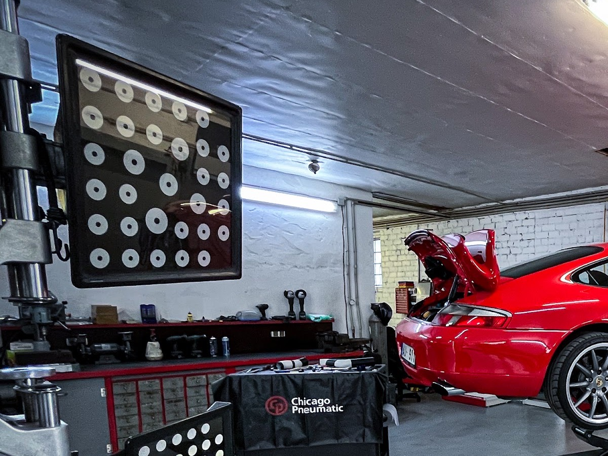
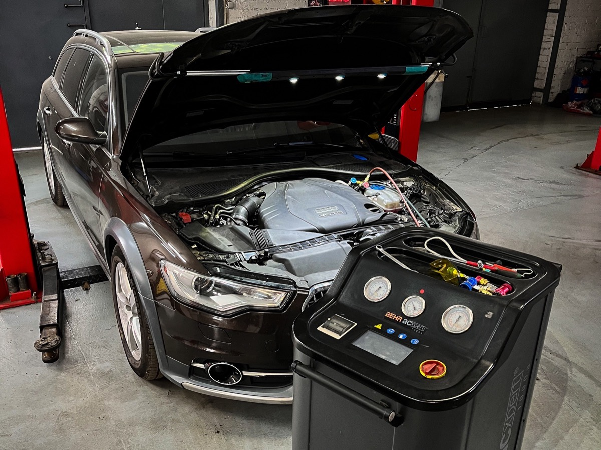
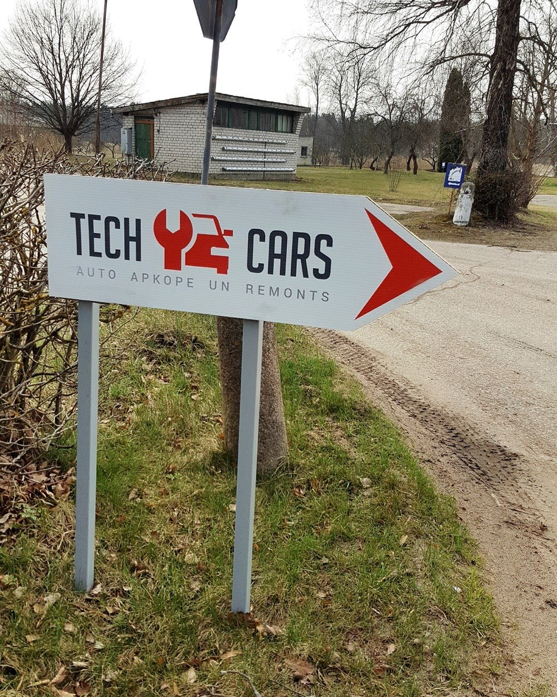

Trīs lietas. Kārtīgi.

Apkope un remonts
Gaišā, tīrā darbnīcā ar pacēlājiem — no eļļas maiņas līdz ritošajai daļai.
Datordiagnostika
Deg lampiņa? Pieslēdzam, nolasām, pasakām, kas par vainu — un cik tas maksās.

Kondicionieri
Uzpilde un apkope ar stacionāro iekārtu — pirms vasaras vai kad vairs nedzesē.
Pieteikt remontu
Uzraksti, kas par auto un kas noticis. Atbildēsim ar laiku un aptuvenu cenu — bez gaidīšanas pie telefona.
Ziņa top tavā ierīcē — šī lapa neko neglabā un nevienam nesūta tavā vietā.
Bez vaimanāšanas.
„Lielisks serviss … Vienmēr prieks sadarboties!”
Google„Gaišas, tīras telpas. Atsaucīgi darbinieki.”
Google„Atsaucīgi darbinieki! Izpalīdzēja uz sitiena.”
GoogleGoogle · 4,8 no 5 · 95 atsauksmes
Meklē šo zīmi.
- Pirmdiena – piektdiena09:00 – 18:00
- Sestdiena, svētdienaslēgts

Pilns pakalpojumu saraksts un cenas, precizētas ar jums · lapa krievu valodā · lapa uz jūsu domēna techcars.lv, kur šobrīd redzama servera noklusējuma lapa vai tukša veidne · pieslēgšana Google kartes ierakstam, kur „vietne” šobrīd ir Facebook.